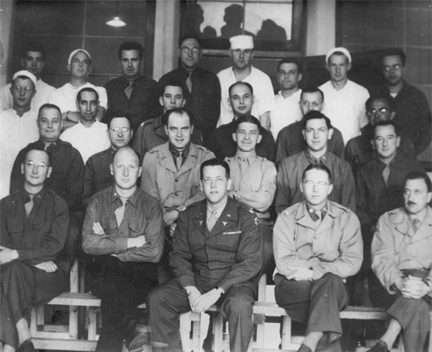

Robert Lowry Berry was a Captain and Surgeon in the 28th General Hospital during World War 2. He was born and raised in Villa Rica, Georgia, and he began a medical practice there after graduating from medical school in 1936. He enlisted in the military in early 1941, and after Pearly Harbor he was stationed at Fort Bragg in North Carolina his unit was transferred to the UK in 1943.
The 28th General Hospital spents many months in England preparing for Operation Overlord, D-Day, to occur. They moved onto the continent after the Allies established a foothold in France in June of 1944.
They set up their facilities at Fort de la Chartreuse near Liege, Belgium. This fort was constucted in the early 1800s and saw service across both World Wars. The fort was struck on multiple occassions by air raids, artillery barrages, and rocket strikes. These intensified during the German last-ditch offensive known as the Battle of the Bulge as did the influx of injured GIs in need of surgery.
The table below and to the left displays his location throughout the war. In the picture below and to the right, Captain Berry is on the second row, third from the left. This picture was taken during his time in England. -28th General Hospital Unit History

| Year | Country |
|---|---|
| 1941-1943 | USA |
| 1943-1944 | UK, France |
| 1944-1945 | France, Belgium |